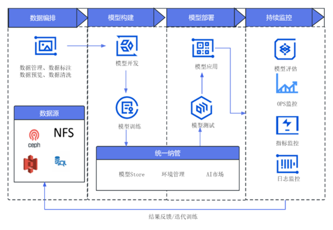

端到端全流程
端到端全流程包括数据集处理-模型开发-模型训练-模型部署和应用-监控和运维，提供一整套对应AI全生命周期的工具和服务 
数据准备
创建一个数据集、上传数据集的文件。
模型开发
创建一个VSCode的模型开发的任务，数据集选择刚才上传的数据集。 启动以后，进入到VSCode，进行算法的开发，刚才选择的数据集挂载在容器的/dataset/数据集目录
模型训练
算法开发完成以后，对于长时间的训练，可以将算法提交模型训练任务。
点击“更多”按钮，选择“模型训练”

填写模型训练的表单信息。
启动模型训练任务
导出模型
导出模型，模型训练完成以后，点击“更多”按钮，选择“导出模型”


模型应用
创建一个模型应用的任务，选在刚才训练好的模型，运行模型应用的服务，即可进行推理。